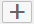

Create restricted columns to restrict values of measures based on attribute
restrictions. For example, you can choose to restrict the value for the REVENUE column only
for REGION = APJ, and YEAR = 2012.
Context
You can apply restrictions on measures defined in the semantics node by using any of the below
approaches:
- Apply restrictions on attribute values by using values from other attribute
columns.
- Apply restriction on attribute values using expressions.
Note For restricted columns, modeler applies the aggregation type of the base column, and you
can create restricted columns in the default aggregation view node or star join node
only.
Procedure
-
1. Open the required graphical calculation view in the editor.
-
Select the default aggregation node.
Note
You can also create restricted columns in star join nodes.
-
Choose the Restricted Columns tab.
-
Choose .
-
In the General section, provide a name and description to the
restricted column.
-
In the Base Measure dropdown list, select a measure on which you
want to apply restrictions.
-
If you want to hide the restricted column for data preview, select the
Hidden checkbox.
-
Apply restrictions using column values.
You can define a condition using attribute columns to apply restrictions on
the base measure.
-
Select Columns.
-
Choose .
-
In the Column dropdown list, selecte an attribute column.
-
In the Operator dropdown list, select a required operation to
define the condition.
-
In the Value field, select a value from the
value help.
-
If you want to apply restrictions only for the defined conditions,
choose Include.
Note
You can apply restrictions using more than one attribute
column.
-
Apply restrictions using expressions.
If you want to use an expression to apply restrictions on the base measure,
then:
-
Select Expression.
-
Choose Edit Expression.
-
In the expression editor, enter your expression.
Note You can also use input parameters in your expressions to create
restricted columns.